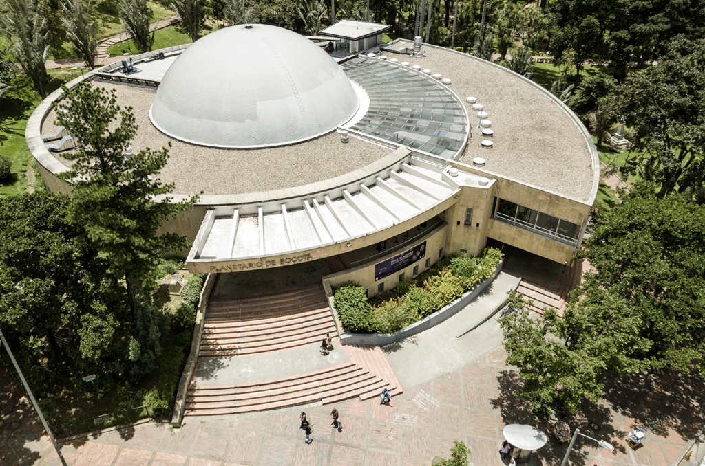
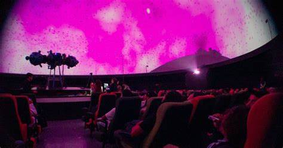
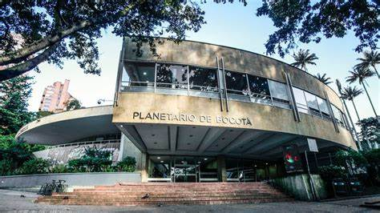
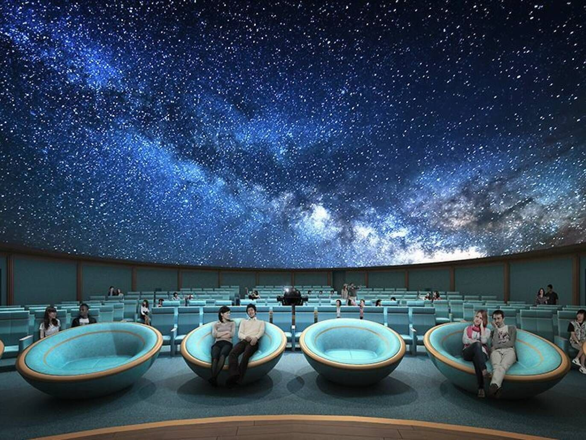
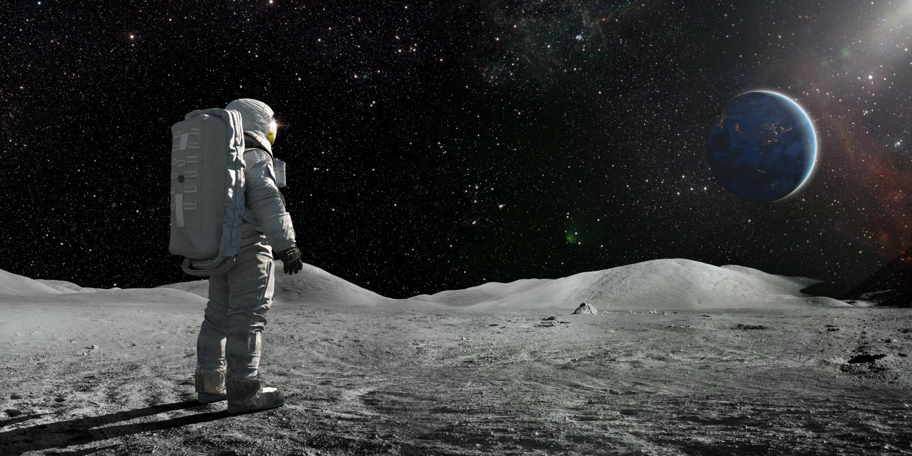

El Planetario de Bogotá es un centro cultural y científico que promueve el conocimiento del universo a través de exposiciones, proyecciones inmersivas, talleres y actividades interactivas para todas las edades.
Ubicación
Dirección: Calle 26B #5-93, Bogotá, Colombia.
Coordenadas: 4.6097° N, 74.0721° W
¿Cómo llegar?
- TransMilenio: Estación Museo Nacional (línea A).
- A pie: Desde el centro internacional, aproximadamente 10 minutos.
- Bus: Varias rutas del SITP pasan por la Carrera 7 y la Calle 26.
Horarios
- Martes a viernes: 8:00 a.m. - 5:00 p.m.
- Sábados, domingos y festivos: 10:00 a.m. - 6:00 p.m.
- Lunes: Cerrado (excepto festivos)
Precios
- 🔸 Entrada general: $6.000 COP
- 🔸 Estudiantes y niños: $5.000 COP
- 🔸 Adultos mayores: $4.000 COP
- 🔸 Proyecciones especiales: $10.000 - $15.000 COP



